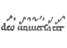
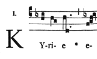
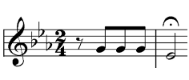
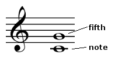
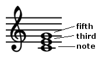

Medieval/Renaissance Music
Introduction
Table Summary
| Dark Ages ca. 500-1000 |
later Middle Ages ca. 1000-1400 |
Renaissance ca. 1400-1600 |
|
| music | Gregorian chant | polyphonic vocal music (sacred and secular) | |
| notation | crude notation (approximate indication of pitch) | staff notation (precise indication of pitch and rhythm) | |
General Features
The medieval and Renaissance periods each witnessed a critical transition in the structure of Western music. During the Middle Ages, monophony evolved into polyphony (see Musical Texture). During the Renaissance, the shell harmony of the Middle Ages was succeeded by true harmony.
| Middle Ages | Renaissance | Baroque |
| monophony > polyphony | shell harmony > true harmony | church modes > major/minor scales |
Throughout the Baroque, Classical, and Romantic periods, Western art music was based on two kinds of scales: major and minor (see Tonality). Medieval and Renaissance music, on the other hand, was based on a set of eight scales, known as the church modes.4
The church modes served as excellent aids for writing smooth melodies. They proved ill-suited to composing harmony, however, which became increasingly problematic as harmony-writing became more common and complex. Ultimately, the church modes were abandoned (in the Baroque era) in favour of major and minor scales.5
Main Article
Medieval Music
During the Early Christian period (ca. 200-500), portions of scripture were set to traditional Roman melodies. In the Dark Ages (ca. 500-1000), these works were organized into an official Church repertoire, largely under the reign of Pope Gregory I. They are consequently known as Gregorian chant.2
Gregorian chants are monophonic vocal works, historically performed during various Roman Catholic ceremonies. The scale of chant performance ranges from a lone soloist to a large choir. In some cases, chant performance may alternate between groups, or between a group and soloist.
The evolution of polyphony began in the late Dark Ages, when some musicians began to embellish Gregorian chants with a parallel melody line.I24,2
As illustrated above, a parallel melody line copies the pitch movement and rhythm of the original line. Lines were never strictly parallel throughout an entire composition, however; this would inevitably result in some unpleasant-sounding intervals. Such intervals were averted by adding small deviations from strict parallel motion.I47
Fully-developed polyphony emerged in the later medieval period (ca. 1000-1400), when each line acquired independent pitch movement and rhythm (see Musical Texture). The number of lines also expanded, such that three- and four-part polyphony became common.2
The complexity of polyphonic music compelled the development of staff notation. The origins of staff notation lie in the Dark Ages, when melodies were approximately indicated with simple markings. The evolution of modern staff notation was accomplished chiefly during the later medieval and Renaissance periods; the representation of precise pitch developed first (with the addition of staff lines), followed by precise rhythm (with time signatures and different styles of notes and rests).I49,6
| Dark Age notation | addition of staff lines | modern notation |
| 
Credit: Zman |

Credit: public domain |

Credit: Mezzofortist |
{kind=link}
{kind=link}
{kind=link}
To recap: the principal form of Western art music in the Dark Ages was Gregorian chant, which was monophonic. Polyphonic music emerged as chants were embellished with additional melody lines; in time, purely original polyphonic music was also composed (along with polyphonic music built on top of Gregorian chants). The convention of building polyphonic music upon an existing melody would linger for centuries, however; only in the Baroque era did it become standard practice to compose wholly original music.
Secular Music
Throughout the Middle Ages, advances in music practice and theory were driven mainly by sacred music. Over the centuries, these advances diffused to secular music (non-religious music).I61,3
Since ancient times, secular vocal music had been composed for popular entertainment. From antiquity through the early Middle Ages, these compositions featured monophonic texture (see Musical Texture); typical subjects were heroic legends, love stories, and satirical observations. In the Dark Ages, minstrels (a general term for wandering performers) were the principal group of professional secular musicians.I18,3
In the later medieval period, minstrels were joined by such groups as the troubadours (of southern France), trouveres (northern France), and minnesingers and meistersingers (Germany). In addition to composing monophonic works, these groups introduced polyphony to secular music. Like their sacred counterparts, polyphonic secular works were often built upon an existing melody (rather than being composed entirely from scratch) up until the Baroque era.
Renaissance Music
The term "Renaissance" denotes the revival of classical culture (i.e. Greco-Roman culture). In some cases this revival was quite direct; sculptors, for instance, reawakened the classical statue by studying ancient originals. With no surviving ancient music to emulate, however, composers took part in the Renaissance by embracing the general classical principles of simplicity, balance, order, and clarity (see Western Aesthetics).
Throughout the later medieval period, composers elevated polyphonic music to staggering heights of complexity. Renaissance composers reigned in this tendency, preferring melodies and harmonies of greater simplicity and clarity. Renaissance music is also notable for its ample use of imitation (the repetition or variation of a melody, often at a different pitch), which has remained a key element of Western music ever since. Imitation expands and amplifies the effect of a melody, and serves as a unifying force throughout a musical work.I113-17,3
The Renaissance also witnessed the embrace of sweet true harmony in place of dry shell harmony. "Shell harmony" has two parts: a root note and its fifth. "True harmony" has three parts: a root note, its third, and its fifth.I86-89,3
| shell harmony | true harmony |
| 
Credit: Hyacinth (modified) |

Credit: Gringer (modified) |
{kind=link}
{kind=link}
Generally speaking, leadership of Western culture belonged to France during the later Middle Ages, then to Italy during the Renaissance. Music is an exception to this general account. While later medieval music was indeed led by France, Renaissance music was led by three regions, consecutively: Burgundy, then the Low Countries, then Italy.3
Instrumental Music
Vocal works (sacred and secular) were the predominant form of music throughout the medieval and Renaissance periods; instrumental music served chiefly as accompaniment for singers or dancers. Nonetheless, the Renaissance did witness the rise of independent instrumental music. Instrumental works of the Renaissance period were mainly composed for lute, keyboard (organ, harpsichord, or clavichord), or small ensembles (strings, woodwinds, and/or brass).I142,3
2 - "Western music", Encarta 2004.
3 - "Western music", Encyclopedia Britannica. Accessed September 2010.
4 - "Diatonic", Encyclopedia Britannica. Accessed September 2010.
5 - "Church mode", Encyclopedia Britannica. Accessed September 2010.
6 - "Musical notation", Encarta 2004.
7 - "Josquin Desprez", Encarta 2004.
8 - "Claudio Monteverdi", Encarta 2004.
9 - "Opera", Encyclopedia Britannica. Accessed September 2010.